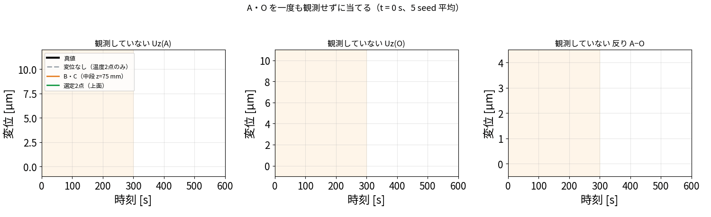

更新日：2026-10-03
これまでの記事で、温度2点に変位2点を足すと推定が良くなることを示してきました。 この記事は、それが研究の主張として成り立つのかを、先行研究を調べたうえで整理したものです。
| 内容 | |
|---|---|
| 確かめたいこと | 「温度だけでなく変位も観測としてデータ同化に入れる」ことが、研究の主張として成り立つか。先行研究にないか、そして実際に効果があるか |
| 検証1（§5） | 同じ場所に温度計を置くか変位計を置くかで差が出るか。センサの本数（4本）と場所をそろえ、測る量だけを変える |
| 検証2（§6） | 評価点 A・O を一度も観測せず、別の場所の変位2点だけで A・O の変形を当てられるか（blog_004 §7-4 の循環を断つ） |
| 真値（正解） | ROM で作った模擬データ（双子実験）。実機ではありません |
| 共通の観測 | 温度2点（P2・P0）。ここに変位2点を足したり、場所を変えたりする |
| ノイズ | 温度 0.30 K、変位 0.30 µm |
| 同化の設定 | EnKF・60メンバー・30 秒ごと20回・seed 20260913〜17 の5回平均 |
| 評価 | 加熱期 30〜300 秒の平均。全 20,696 セルの温度、反り \(U_z(A)-U_z(O)\) 、個別の \(U_z(A)\) ・ \(U_z(O)\) |
| 文献調査の範囲 | 2026-10-03 に英語5回・日本語1回の検索。網羅的ではありません（§4） |
この記事の結論 1. 工作機械の熱変形補正では、温度を観測して変位を推定するか、変位を直接測って補正するかのどちらかが一般的。 2. 温度と変位を同時に観測としてデータ同化に入れ、温度場・発熱量まで推定した例は、調べた範囲では見当たらない。 3. 手法そのもの（EnKF、POD、変位の同化）は既知。新しいのは組み合わせ方と、工作機械の熱変形に適用した点。 4. 同じ場所なら、温度計と変位計はほぼ互角だった（§5）。変位計の価値は「情報量が多いこと」ではなく、温度計を置けない場所に置けること。 5. 別の場所で変位を測れば、一度も測っていない場所の変形を、直接測るより正確に当てられた（0.076 µm 対 0.135 µm、§6）。
熱変形を推定したいとき、観測は温度だけでなく、変位も同化に入れたほうがよい。 変位計は5点すべての温度に触れるので、温度計のない点の温度まで直り、結果として温度場も発熱量も熱変形も良くなる。 そして変位計は、知りたい場所に置く必要がない。別の場所で測って、測っていない場所の変形を当てられる。
この主張を支える計算結果と、先行研究との関係を以下にまとめます。
詳しくは blog_006 §7-5b にありますが、要点は3つです。
\[ U_z(A)=3.970+0.33\,T_0-0.13\,T_1+0.26\,T_2+0.64\,T_3+0.11\,T_4 \]
その結果、温度計を置いていない点の温度まで直ります。
\(t=30\) 秒の更新で、温度計のない P3 を −4.97 K、P4 を −7.67 K 直しているのは変位計です。 \(t=150\) 秒では温度計のずれがほぼ 0 になり、温度場を直しているのは変位計だけになります。
いずれも ROM 双子実験、EnKF・60メンバー・30秒ごと20回・5 seed 平均、加熱期30〜300秒です。
| 観測 | 温度場の誤差 | 推定した発熱量 | 出典 |
|---|---|---|---|
| 同化なし | 4.585 K | 16.45 W | blog_004 §7-6 |
| 温度2点のみ（P2＋P0） | 0.503 K | 14.05 W | 同上 |
| 温度2点＋変位2点 | 0.160 K | 14.89 W（真値15 W） | 同上 |
さらに、実ソルバ（OpenFOAM＋FrontISTR）を真値にし、新しく計算した条件でも確かめました。
| 真値の条件 | 温度2点のみ | 温度2点＋変位2点 | 出典 |
|---|---|---|---|
| 25 W（反りの誤差） | 0.74 µm | 0.09 µm | 21_advantage_verification.md |
| 25 W（発熱量） | 23.59 W | 24.91 W（真値25 W） | 同上 |
温度センサの置き方が悪くても（P2＋P0 はどちらもヒータ側）、変位計を足せば当たります。
2026-10-03 に、英語5回・日本語1回の検索を行いました。網羅的な調査ではありません。
| 研究 | 手法 | 観測に使うもの | 変位の扱い |
|---|---|---|---|
| ETH Zurich (2024) | カルマンフィルタ＋低次元化FEM | 温度のみ（5軸機で25本中13本） | 推定結果（出力） |
| Teshima et al. (2024) CIRP JMST | ROM＋回帰、センサ配置指針 | 温度のみ | 出力 |
| Tekniker | 状態空間＋カルマンフィルタ | 主軸回転数・温度 | 出力 |
| NIST の整理 | 直接法／間接法の分類 | 温度（間接法）または変位（直接法） | 直接法は変位を測って直接補正。状態推定はしない |
| 逆熱伝導問題（EKF） | 拡張カルマンフィルタ | 温度のみ | ― |
| Displacement Data Assimilation | EnKF | 変位のみ（流体分野） | 観測として使用 |
| 日本（特許・論文） | 回帰・CNN・多点温度計測（302点） | 温度のみ | 出力 |
| 項目 | ETH Zurich (2024) | 本研究 |
|---|---|---|
| モデル | 低次元化した FEM | POD/Q-DEIM の ROM |
| 同化 | カルマンフィルタ | EnKF |
| 観測 | 温度のみ（25本中13本） | 温度2本＋変位2本 |
| 推定するもの | 温度場 → 熱変位 | 温度場・熱変形・発熱量 |
| 結果 | 未観測温度 RMSE 2.7 ℃、熱変位 67.4 → 33.3 µm（実機） | 温度場 0.16 K、未観測の反り 0.081 µm（計算で作った真値） |
| 実装 | 非公開 | オープンソースで公開 |
手法の枠組みはほぼ同じです。 違いは「観測に変位を入れたか」「発熱量まで推定するか」「実装が公開されているか」です。 ただし ETH は実機で検証しており、本研究は計算で作った真値だけです。ここは明確に劣ります。
「変位計のほうが情報量が多いから良い」のかを確かめるため、同じ場所に温度計を置いた場合と比べました。
センサの本数（計4本）と場所をそろえ、変えるのは「そこで何を測るか」だけです（run/disp_vs_temp_same_place.py）。

| 観測（温度2点 P2＋P0 は共通） | 温度場全体 | 反り A−O | Uz(A) | Uz(O) |
|---|---|---|---|---|
| 温度2点のみ | 0.528 K | 0.756 µm | 0.234 µm | 0.922 µm |
| ＋ A/O に温度計2本 | 0.132 K | 0.201 µm | 0.113 µm | 0.154 µm |
| ＋ A/O に変位計2本（本番） | 0.145 K | 0.135 µm | 0.138 µm | 0.104 µm |
| ＋ 両方（計6本） | 0.127 K | 0.136 µm | 0.110 µm | 0.117 µm |
seed ごとに対応をとった勝敗（変位計が温度計より良かった回数、5回中）：
| 評価する量 | 変位計が良かった回数 |
|---|---|
| 温度場全体 | 2 / 5 |
| 反り A−O | 4 / 5 |
| Uz(A) | 0 / 5 |
| Uz(O) | 5 / 5 |
したがって「変位計は情報量が多いから優れている」とは言えません。 変位計の価値は、温度計を置けない場所に置けることにあります。 工作機械では、加工中の工具先端や内部に熱電対を入れられませんが、変位計なら外側から測れます。
blog_004 §7-4
の構成は、評価している A・O をそのまま観測に使っていました（循環）。
そこで、A・O を一度も観測せず、別の場所の変位2点だけで
A・O
を当てられるかを調べました（run/disp_elsewhere_predict_AO.py）。

赤＝温度センサ（P2・P0）／緑＝選定した変位2点（矢印＝測る方向）／橙＝B・C／黒＝評価点 A・O。 A・O は一度も観測していません。
| 役割 | 場所 | 測るもの |
|---|---|---|
| 温度センサ（共通） | P2 (36.5, 6.9, 50.8)、P0 (21.3, −1.6, 51.6) mm | 温度 |
| 選定した変位1点目 | (9.7, −36.2, 100.5) mm（上面、−y 寄り） | \(U_x\) （半径方向） |
| 選定した変位2点目 | (−34.6, 14.4, 100.5) mm（上面、ヒータの反対側） | \(U_z\) （上下方向） |
| B・C（比較用） | (±28, 0, 75) mm（A・O の真下、25 mm 下） | \(U_z\) |
| 評価点 A・O | (±28.7, 0, 100.5) mm（上面） | 測らない |
考え方：「その点を測ったら、反り A−O がどれだけはっきりするか」を候補すべてについて計算し、いちばんはっきりする点を選ぶ。それだけです。
同化を始める前、反り A−O は「だいたいこのくらい」としか分かりません。このあいまいさを標準偏差 \(\sigma\) [µm] で表します。
\[ \sigma_S^2=w^{\mathsf T}\Big(B-BH_S^{\mathsf T}(H_SBH_S^{\mathsf T}+R)^{-1}H_SB\Big)w \]
| 記号 | 中身 | どこから来るか |
|---|---|---|
| \(w\) | 反り A−O に対する5点温度の熱感度 (0.47, −0.65, 0.60, 0.04, −0.46) µm/K | FrontISTR |
| \(B\) | 5点の温度がどうばらつくか | ROM を4000通り回して作る |
| \(H_S\) | 候補 \(S\) を測る演算子 | 候補の熱感度 |
| \(R\) | センサのノイズ（温度 0.3 K、変位 0.3 µm） | 仕様 |
括弧の中は「測った後に残る温度のあいまいさ」で、カルマンフィルタの更新式と同じ形です。 それを \(w\) ではさむと、「残る反りのあいまいさ」になります。
温度2点（P2＋P0）だけのとき、 \(\sigma=1.186\) µm でした。反りの振幅が 2.74 µm なので、半分近く分かっていない状態です。

左・中：候補ごとの \(\sigma\) （上面を真上から見た図、 \(U_z\) を測る場合）。色が薄いほど良い候補。 右： \(\sigma\) が1点足すごとに下がる様子。
1点目：A・O の近く（12 mm 以内）を除いた 14,754 個の候補すべてについて \(\sigma\) を計算し、最小の点を選びます。
| 候補 | \(\sigma\) | |
|---|---|---|
| 1位 | (9.7, −36.2, 100.5) の \(U_x\) | 0.347 µm |
| 2位 | (9.7, 36.2, 100.5) の \(U_x\) | 0.347 µm |
| 3位 | (14.4, −34.6, 100.5) の \(U_x\) | 0.347 µm |
| 中央値 | ― | 1.026 µm |
| 最下位 | (37.5, 0, 0) の \(U_y\) | 1.186 µm（測らないのと同じ） |
1.186 µm → 0.347 µm。1本測るだけで、あいまいさが約3分の1になりました。
2点目：1点目を測った前提で \(\sigma\) を全候補について計算し直し、また最小を選びます。
| 候補 | \(\sigma\) | |
|---|---|---|
| 1位 | (−34.6, 14.4, 100.5) の \(U_z\) | 0.256 µm |
| 2位 | (−36.2, 9.7, 100.5) の \(U_z\) | 0.256 µm |
| 3位 | (−32.5, 18.7, 100.5) の \(U_z\) | 0.257 µm |
| 中央値 | ― | 0.330 µm |
0.347 µm → 0.256 µm。
2点目の計算をやり直すのが要点です。 1点目を測った後は「まだ分かっていないこと」が変わるので、候補の良し悪しも変わります。
図の左（1点目）と中（2点目）を見比べると、良い候補の場所が移っています。
やり直さずに「1位と2位をそのまま選ぶ」と、2位は1位のすぐ隣（(9.7, 36.2, 100.5)）なので、同じことを2回測ることになり、あまり改善しません。
式が難しければ、こう考えてください。 「いま分かっていないことを、いちばん多く教えてくれる点を1つ選ぶ。選んだら、何が分かっていないかを数え直して、また1つ選ぶ。」
ここまで測定値は一切使っていません。 机上の計算だけで場所が決まります。

| 変位2点をどこに置くか | 観測していない反り A−O | 観測していない Uz(A) | 温度場全体 |
|---|---|---|---|
| 変位なし（温度2点のみ） | 0.756 µm | 0.234 µm | 0.528 K |
| A・O 自身を観測（循環・参考） | 0.135 µm | 0.138 µm | 0.145 K |
| B・C（中段 z=75 mm の \(U_z\) ） | 0.185 µm | 0.151 µm | 0.175 K |
| 選定2点（(9.7, −36.2, 100.5) の \(U_x\) と (−34.6, 14.4, 100.5) の \(U_z\) ） | 0.076 µm | 0.103 µm | 0.126 K |
| 側面中段 z=50 mm の \(U_x\) | 0.207 µm | 0.189 µm | 0.248 K |
| 底面近く z=5 mm の \(U_z\) （悪い例） | 0.559 µm | 0.196 µm | 0.408 K |

左＝真値、中＝温度2点のみ、右＝温度2点＋別の場所の変位2点（A・O は一度も測らない）。 色＝温度、形＝熱変形（790 倍に誇張）。赤球＝温度センサ、緑球＝観測した変位2点、黒球＝評価点 A・O。seed 20260913。
形と色で、何が起きているか一目で分かります。例えば \(t=150\) 秒では
| 反り A−O | 誤差 | |
|---|---|---|
| 真値 | 2.57 µm | ― |
| 温度2点のみ（中） | 1.38 µm | 1.19 µm |
| 温度2点＋別の場所の変位2点（右） | 2.56 µm | 0.01 µm |
グラフでも見ておきます。

観測していない Uz(A)・Uz(O)・反り A−O が、同化のたびに真値（黒）へ近づく様子。 灰＝変位なし（温度2点のみ）、橙＝B・C を測る、緑＝選定2点を測る。5 seed 平均。
これが本研究のいちばん強い結果だと考えています。 工作機械で本当に知りたいのは工具先端の変位ですが、加工中にそこは測れません。 測れる場所で変位を測り、測れない場所の変形を当てることを、計算で示せました。
工作機械の熱変形補正では、温度を観測して変位を推定する形か、変位を直接測って補正する形が一般的である。 本研究は温度と変位を同時に観測としてデータ同化に入れ、温度センサのない点の温度・測っていない点の熱変形・発熱量を同時に推定した。 とくに、A・O を一度も観測せずに、別の場所の変位2点から反りを 0.076 µm（振幅の2.8 %）で推定できた。これは A・O を直接測った場合（0.135 µm）より正確である。 調べた範囲では、この形の報告は見当たらない。
「調べた範囲では」を必ず付けます。英語5回・日本語1回の検索だけが根拠だからです。
| 言わない | 理由 |
|---|---|
| 「初めて提案した」 | 網羅的な文献調査をしていない |
| 「EnKF／POD／変位の同化が新しい」 | いずれも既知の手法 |
| 「変位計は温度計より情報量が多い」 | 同じ場所では互角だった（§5） |
| 「実機で有効」 | 真値はすべて計算で作ったもの |
| 「どんな機械でも有効」 | 熱源の位置が変わると配置も変わる（blog_007） |
IoT/thermal_expansion_experiment/
に計画があるが、未実施。| 章 | 言うこと |
|---|---|
| 背景 | 熱変形補正では温度を測って変位を推定するのが一般的 |
| 課題 | 温度計は1本で1点しか見られない。置けない場所もある |
| 本研究の主張 | 変位も観測として同化に入れる。変位計は5点すべての温度に触れるので、温度計のない点の温度まで直る。しかも知りたい場所に置く必要がない |
| 結果 | 温度場 0.503 → 0.160 K、発熱量 14.05 → 14.89 W。A・O を測らずに反り 0.076 µm（直接測るより正確） |
| 限界 | 計算で作った真値のみ。実機は未実施。文献調査も網羅的ではない |